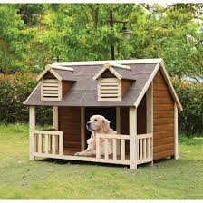

Projeto "Lar Temporário, Amor Permanente"
Nosso principal projeto visa encontrar lares temporários para animais resgatados enquanto eles aguardam uma adoção definitiva. Cuidamos de sua saúde, alimentação e socialização.
Projeto "Voluntário do Bem"
O seu tempo e carinho são o presente mais valioso que nossos animais podem receber. Os voluntários nos ajudam com:
- Passeios e socialização com os animais.
- Ajuda na limpeza e organização do abrigo.
- Participação em feiras de adoção.
- Transporte de animais para consultas veterinárias.
Interessado? O primeiro passo é se cadastrar em nossa plataforma! Clique aqui para ir para a página de cadastro.
Projeto "Lar Definitivo, Amor Infinito"
Este projeto é dedicado a garantir que cada animal resgatado encontre não apenas um abrigo temporário, mas sim um lar definitivo, cheio de cuidado e amor. Nossa equipe realiza entrevistas com famílias, acompanhamento pós-adoção e campanhas educativas sobre posse responsável.
Acreditamos que cada adoção responsável transforma duas vidas: a do animal e a da família que o acolhe.

Como Doar
Sua doação é fundamental para mantermos nosso trabalho. Os recursos são utilizados para comprar ração, medicamentos, pagar por tratamentos veterinários e manter a estrutura do nosso abrigo.
Você pode doar através de PIX, transferência bancária ou cartão de crédito. Toda contribuição faz a diferença!
Chave PIX (CNPJ): 12.345.678/0001-99